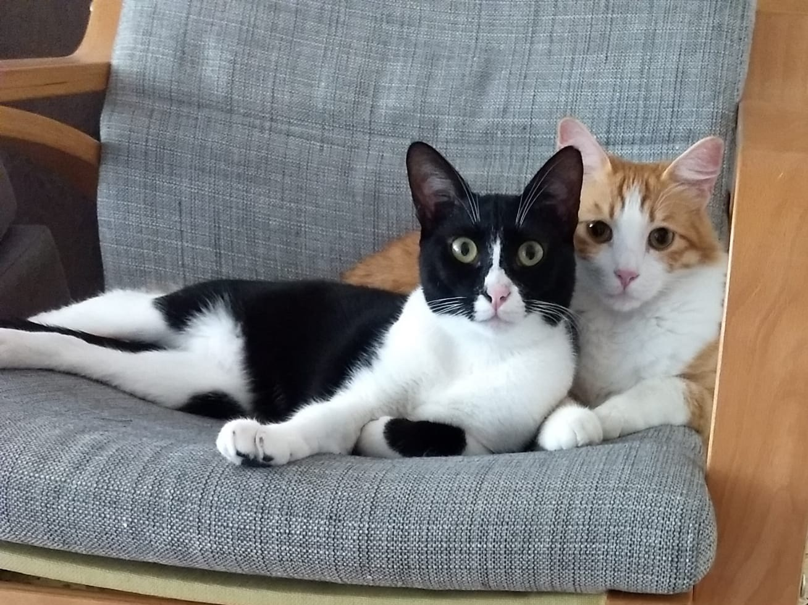

The domestic cat
Click here for more information about the lions
About domestic cats
They are often called house cats when kept as indoor pets or simply cats when there is no need to distinguish them from other felids and felines. They are often valued by humans for companionship.
There are more than seventy cat breeds recognized by various cat registries.
- They can hear sounds too faint or too high in frequency for human ears
- They can see in near darkness
- They have poorer color vision and a better sense of smell than humans
Cat senses
History
Cats were venerated in ancient Egypt, but there may have been instances of domestication as early as the Neolithic from around 9,500 years ago (7500 BC). Did you know that, The felids are a rapidly evolving family of mammals that includes:
- Lions
- Tigers
- Cougars
Eva & Netta Wasserman
